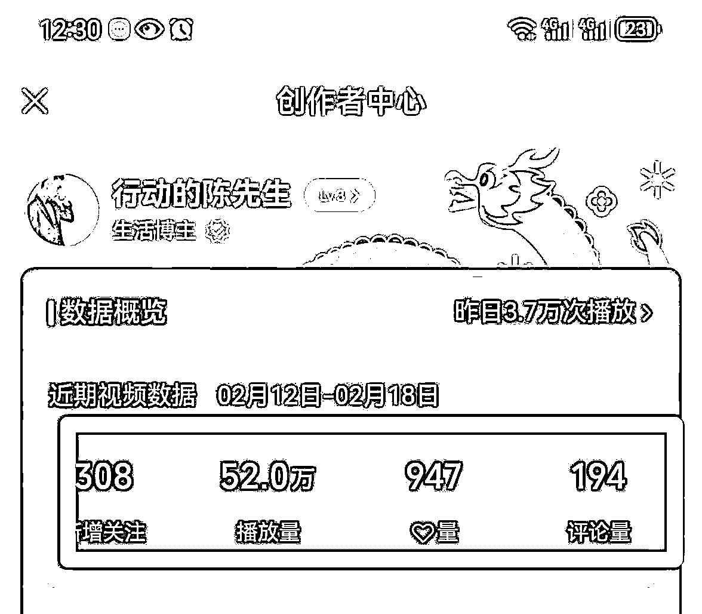
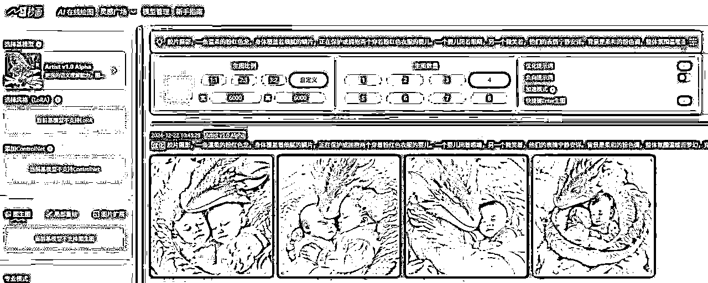
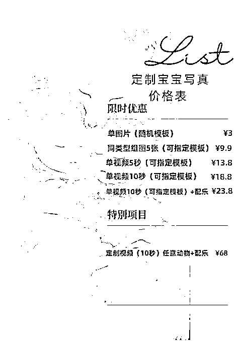

来源：https://tx0vqocm3fc.feishu.cn/docx/OhX8dVO3roQPi4x2GDhcXZUHn5C
生财有术的圈友你好，我是陈先生
⑨⑥年四川人，②⑧岁，万人星球嘉宾/训练营导师，主视频号和千人付费群，
2020 年 1 月开始摸索做视频号和线上副业，截止 2025 年 1 月变现超⑤Ow。
想和你分享..（全文+图 2w 字左右，20 分钟左右阅读完）
闭环目录：1、视频号规则和起号
2、爆款号对标和兵器库
3、AI 工具｜图片剪辑
4、AI 赋能｜爆款剪辑
5、AI 视频和微信号变现
6、AI 账号十倍放大收益
7、独家秘诀和提问复盘
今晚我们先了解一下视频号的重要底层规则。（老司机可跳过目录1）
一、微信短视频营销新趋势
抖音和快手两个平台成功地验证了：图文时代已经迈向了视频时代，视频的直观性和碎片化，在 2020 年之后，用户已经逐渐适应起来，微信携手视频号入局必有一番新的机遇。
从用户层面来看，微信有 14 亿的用户。结合微信生态的。社交平台，因为视频号可以直接放公众号链接，可以直接分享到朋友圈，可以直播可以带货，后续还有很多工人在开发，整体看视频号的趋势和发展趋势是可观的，如果你的账号也可以得到权限可以开通视频号，那一定要尝试做一做。
二、视频号的算法及运营规则
2.1 视频号推荐算法
知己知彼方能百战百胜，了解微信视频号的平台算法和规则，对于我们在视频号的创作成为成功的创作者非常重要。
目前视频号的推荐，和抖音和快手最大的区别就是分发推荐模式。
目前视频号的推荐，基本是基于社交关系来进行推荐分发：
例如：发现页中的小红点提示，是好友点赞。
好友在看的直播 等。
进入视频号，默认打开的是朋友板块，而朋友也是处于顶部。四大信息流的中间位置，从朋友圈聊天图片这里看到的都是视频号动态，更是纯粹的社交推荐。
在最近曝光的视频和算法机制中显示，朋友点赞的社交推荐在算法中占 55%，而优质的内容热门推荐只占 15%。这就充分证明充满微信特色的社交分发，依然是视频号的优先级。
2.2 微信视频号审核机制
微信视频号每天都有大量的创作者发布视频，目前有双重的审核，分别是机器人审核和人工审核。
微信视频号的审核标准，我们可以扫码看下方的官方运营规则。
图 1：
机器审核：
提前设置好人工智能模型来识别视频画面和关键词。用审核作品和文案是否存在违规行为。如果存在违规行为的话，视频可能会被：降低推荐，删除作品，自我可见等。
严重违反规则，直接删除或设置自我可见。
如果无法判别违规的话会进入人工审核系统。
人工审核：
对机器筛选出疑似违规的作品，由人工进行审核。人工审核主要围绕三块，视频标题，视频封面，视频关键帧。如果发现是违规，将会进行：删除视频，降权通告，封禁账号等处理。
三、如何打造视频号…
1.1 账号注册及内容定位
打开微信-点击发现-视频号，点击右上角小人图标，【建立视频号】，填写相关的信息，审核过后就可以发布作品。
需要注意的是，视频号的名称是不可重复的，你注册了别人就用不了了，所以可以去抢注好的名称。
微信视频号的基本常识-视频号的基本设置：
一个微信号只能申请一个视频号，如果是企业号，建议使用合适的微信号开通。
视频号可以通过添加，公众号文章链接，这位公众号导流。和以后的未来电商变现提供了想象空间。
视频号内容可以转发给好友，微信群，朋友圈，点赞，收藏，评论。视频号也可以是利用创作平台，任何时候 ，【优质原创的内容才是核心。】
账号和内容的定位
给视频号做定位是上一篇和录音讲过的定位差异大小差不多，然后我们怎么给视频号做定位呢？
我们做视频号要和开一家店铺一样，尽量选择一个垂直的领域方向。
①做标签
例如专注在健身领域，那输出的内容以后就要以这个领域为主。
那我们做视频写脚本。找素材学习。都要把时间利用在这个领域。内容从浅到深。渐渐的我们会成为这个领域的专家。
用户也会对我们产生信任，慢慢的就会有更高的辨识度，重要的也是在塑造自己。
②精准用户。
当我们抓住某一个领域内容的时候。
吸引来的用户也是同领域的。有助于我们分析用户的话。
这样我们输出的内容更有针对性，后续才能做高转化。
③精准平台流量。
用户精准了，平台会根据关注我们内容的用户画像做推荐，从而为我们的视频也打上标签，更多的优质的流量会推给我们，把我们的内容更加精准和快速的推送到目标客户中，我们也能实现越来越快的增粉的目的。
3.2 那我们如何做到内容垂直？
如何找到视频定位，总共下面五步：
①、先做调研，找对标，找自己的兴趣
②、复盘自己的每一次尝试
③、收集其他人的评价。
④、尝试更多，进行更多的体验。
⑤、用旁观者视角修正自我印象，让定位自然发生。
这篇就到这里～后面再见！
我是陈先生我们今晚继续…
一、视频号基础运营方法
账号基础设置：
①头像和名字
1.头像和名字的设置要求。
除了视频号开通时设定的名字，一年之内还有两次修改的机会，目前头像不限制次数，可以任意修改。
2.基础注意事项
视频号的头像要有标识性，亲切性，个人视频号可以直接利用形象照，企业号可以使用企业 logo 帮助用户建立认知。昵称要简单易懂好传播，如果有一定名气，可以用真实姓名。简历可以简单介绍自己，让别人更快认识我们，知道我们做什么，能够从我们这里获得什么。
背景图分为上下两半，下拉可以看到上半部分，可以进行设计一下，下拉藏个小惊喜。
头像昵称简历背景图不要有明显的引流行为。
②视频号认证
视频号认证，目前分为兴趣认证，职业认证，企业和机构认证。
1.认证申请路径
我的视频号-点击右上角的“…”进行认证。
2.个人认证需要满足的条件：
近 30 天发布一条内容，粉丝需要 100 人以上，已填写简历。
3.在个人认证 里，兴趣领域自媒体认证需要满足任意以下一条要求即可：
在对应领域持续发表原创内容，且视频号和公众号关注数达到 10 万以上。
在对应新区持续发表原创内容，且除微信外的其他平台粉丝数量达到 100 万以上。
通过认证后的账号会显示金 V 的标识，以及名字下方会显示认证的身份。
4.企业和机构认证。
企业和机构认证，是通过已认证的同名公众号为视频号认证，每个视频号每年有两次认证的机会。
一个公众号只可以认证一个视频号：认证需要公众号管理员扫码确认；公众号名称需要与视频号一致，管理员扫码确认后，公众号主体信息将展示在视频号上；企业和机构通过认证，视频号名字后方将带有蓝 V 标志。
三、内容要求
1.发布步骤
打开微信-发现-视频号，点击右上角“相机”，选择拍摄或手机相册素材，然后进入素材编辑页面，完成后就会跳转到发布页面，最后点击“发布”即可。
2.发布内容的格式要求
视频号可以每天发布多条，不限次数。
视频封面不可选，默认第一帧画面。
内容以视频+文字为主，也可以是图片+文字。
视频最长一分钟，最短三秒钟，图片最多 9 张。
（后续有改变）
不能纯发文字，文案超过三行会自动折叠。
配文最多发 1000 个字，也可以存图片或者存视频发布。
文案在编辑时，可以添加话题#XXX
视频的横屏尺寸为 16:9（1080-608），横屏尺寸为 9:16（1080-1920）。
可以添加公众号文章链接，以及位置定位。
我们继续来看视频号的运营技巧。
一、视频号前期提升曝光的方法。
大部分新手前期都会面临这个问题。事实上我们从选题策划制作内容一直到发布作品，其实这都只是准备工作发布完成后我们还需要跟上相应的运营动作。否则有内容极少能主动扩散出圈。
视频号的推荐机制是我点赞我们才能推给朋友，朋友点赞才能推给朋友的朋友，
所以我们发布完。作品后要及时的去推广，推广的途径有哪些呢？
1，自己点赞自己朋友圈推广，这是最基本的，如果我们好友够多，朋友圈的运营也不错，做视频号的话，前期的量就不会太少。
2.私聊微信推广，视频号早期有很多人这么做，但是现在内容太多了，没有新鲜感了，不推荐这样去做宣传。
3.自己的社群，相关的视频点赞群，最重要的是先判断真实的社群点赞评论还是机器刷的？如果色情中的人是真实的，拥有自己的社交圈子，有自己的微信好友，视频号是基于他的社交链接来推送的，这样的内容是非常有用的。
如果点赞是通过机器模拟或者一些批量手机去点的话，不具备社交属性的微信号，这样刷赞对我们内容的传播几乎没有意义，后期还容易被封号。
有哪些值得关注，值得模仿的视频号同类推荐？
读书类：
健身类
生活类：行动的陈先生
这里推荐自己建立一个账号库，将好的低粉爆款账号进行列举，储存下来，一时不备之用。
二、视频号好的工具推荐
①文案灵感
梅花网，文案，金句谷。
②图片素材
Designspiration（根据颜色找图片，以图搜图功能体验很赞）
Pinterest（国际版的“花瓣”，以图搜图）
Pexels（无版权图库）
Unsplash（无版权图库）
③视频素材
包图网（无版权视频）、摄图网
④剪辑工具
剪映 APP（首选，易用性强）
快影 APP
⑤音频工具
迅捷文字转语音：支持 mp3、m4a、wma 等语音格式，识别率高，男女多种音调库。
音效素材站
录屏工具
录屏王
略格式录屏大师：支持自定义屏幕区域录制，音频录制。
…
三、视频号常见的问题解答
①如何让微信朋友找到你的视频号？
微信朋友无法在你的微信中看到你的视频号，你可以主动分享视频或名片给他们。
②哪些人有机会看到你的视频号？
如果你拍的视频或照片很棒，有人（包括你自己）点赞，系统就会推荐给他们的微信朋友，
任何看到的人都可以关注你的视频号。
③我们发表的视频如何进入热门推荐？
建议在发表的时候打赏#话题、配上音乐，设置地理位置信息，让我们的视频更具有吸引力。
当视频很多人点赞时，该视频就可能进入热门推荐。
④视频号会鼓励什么样的内容？
视频号鼓励我们分享原创的拍摄作品，从他人那里搬运过来的内容是不会得到推荐，还可能会被处罚。
⑤一个视频号可以在不同的微信使用吗？
只能开通视频号时的微信使用，无法转移到其他微信中。
⑥为什么视频动态有时候比较模糊？
建议我们使用清晰的原视频，比如说聊天中收到的视频可能就被压缩了，会影响清晰度。例如我们把视频在导出的时候，就要设置 1080p 或者 2k4k。
我刚酒局完，回来了优化素材有点晚，还好赶回来了、
来看看我们今晚的目录：
视频号爆款账号的对标和选题库
1.爆款视频兵器库
2.经典音乐兵器库
3.爆款选题兵器库
4.图片视频素材库。
还记得我们今年有分享过关于抄题库和选题库，今晚总结一下，内容细化一下，毕竟送上嘴的才是最好的对嘛？哈哈哈
1、爆款视频兵器库
我们分享过用微信自带拉群，三个人➕自己小号就可以拉个小群，目的是减少我们的行动阻力。
我再分享一个顺序，下面是我精选的几个赛道，和他们的爆款视频，看看有没有你的赛道，
①奶爸+娃的账号，互动很高#养娃+#奶爸对标账号宝子们。
②情侣账号：这是一个异常值有关于【#女生】#洗澡#雾气腾腾
③卖房卖车对标账号：这个扛着跑的有点意思。
④#读书对标账号
⑤AI 婴儿+老年人赛道：对标账号
⑥医生 IP+自媒体专家类对标账号：#靠谱
在自媒体闭环前几年，我们做账号对标，账号拆解，是我们那正反馈，拿金币结果最快的途径之一。
2、经典音乐兵器库
陈先生 2025：精选背景音乐
我本身初期是用飞书+备忘录，第一时间存好的音乐，早期再用抖音剪映存音乐。好的爆款视频其他都可以改，但音乐是我们不能偷懒的，爆款的音乐一听就能让我们进入状态…
例如这首音乐：
是不是一听前奏，就感觉有一段传奇故事要开始了？
2，背景音乐就到这里，需要那个就用图片中的音乐很方便。
3.爆款选题库可从爆款视频里提取，自列成表
也可以像这样，从变现账号排名里找出爆款的同赛道账号，成功的账号，他们的标题和选题就更容易…
例如我今做变现视频刚发现：
你能猜到这条视频光小游戏就变现了多少嘛？
我之前看这些赶海的视频就好奇，他们背后的变现模式是什么？但不知道他们具体变现多少…
直到我自己今天再做视频变现任务，查爆款排名发现他一条视频可以变现 70000 多块，果然是我们灯下黑，光刷视频了。
下方是变现最好的选题对比库：
视频号 1k 粉后，可做的视频号带小游戏变现全流程：
排名第一账号一个视频变现 90000 多块，拆解后发现视频不难，难的是像他矩阵发一堆，我们今年前面的内容可以复刻他的模式和内容，例如我这里在实操的：
后面出了案例，我们 2025 再仔细分解，我有强烈预感过年还没结束，我们就能接过年流量出几个爆款。
一个视频变现 10000+也不是没有可能，原理我们上面已分享，其他可翻我们目录下内容。
以上是能搞变现的视频寻找对标处，它旁边还有其他甲方投广视频，直接对标抄就行。
前提还是自己能做爆款，能拆解爆款哈，不是原创有风险，不要标原创。
哪句话咋说的，赚钱了可以不分给我，被抓了别说我教的，哈哈哈
4、图片视频素材库。（跟同行学+自存）
图片和视频的积累需要大量的时间，这里也算是很好的竞争力壁垒：
例如我这个手机：
图片 5w+
视频 1800+
录屏 30000+
我们如何更方便的随时记录生活和拍照？
第一步就是把相机放在手机最顺手的快捷键位置，方便第一时间记录：
推荐拍摄摄影的书：
20 年我买了一本拍摄的书，赠了一本教做抖音的书，拍摄技巧其实挺多，用多就会熟悉了。
我再推荐一个日常教拍摄的视频号加入我们对标库，她们的拍摄和定位，也挺简单可以做人设模仿。
这拍摄账号，她能在海量教学视频，多次突出重围的教拍摄视频中框框出爆款，我们简单分析一下优秀的她们：
1.视频人物情感强烈，能抓住三秒眼熟。
2.她的账号做强烈的反差
3。她的账号特殊有我们四川…耙耳朵+虎老虎的独特味道…
4。她更新频率很高日更
5。她就两个人做账号就行，成本不好，基本自然取景…
6。她是接相机和手机的广告，每年变现能力有的，大部分账号停更就是饿死了…
还有一点技巧分享，也是我们分享过的：
手机容易图片和视频多了不好找到，这时我们可以用 QQ 相册保存图片和视频。
今晚内容就到这里，有提问可以评论区互动，有灵感可以发我们评论区。
喜欢的可以点点赞，或者转发内容分享。
2023 年初靠剪辑春节片段图片，连出爆款视频出复盘后写本章，爆款视频剪图流程。
【基础种子】：
1、我自己折腾三年视频号闭环。（打磨期 3 年
2、进阿猫的《觉醒 xx》内部福利-视频号围观打卡群，打卡/围观了接近一百天。（学习期 100+天
3、阿猫在《觉醒 xx》内部分享了【梵野的 xx-视频号赚大钱】。
我第一直觉就买了，后面中午悄悄看+执行，并第一时间各平台尝试机制。（破卡点期 30 天
【机会终于来了！】（前置工具：讯飞输入法 app+剪映 vip。
还有美图秀秀和稿定，4 个都有 ai 优化功能。
前置：1 央视春晚 +2 视频号红利 +3 大家都过年有空玩手机 +4 我合伙人人无岸学长，
出一个火爆的短视频。达到了几万＋的播放量。
正文、我在第一时间凭积累进行：本次火爆热点，“魔术有人好像失败，有可能是背后的炒作”。
先进行爆款的图片收集，寻找最火爆的视频和配音，控制剪辑的时间和信息的密度。
【1:1 模仿视频】
1：视频号图片我经常在小红书选取的图+aip 图
2：用美图秀秀 p 掉 LO 狗， Ai 一键优化。
（能省几分钟。
3：用的剪映 vip，开始尝试 ai+剪辑。
（能省半天时间
4：剪辑中选取本次热点事件，热点人物为中心剪辑。
5：看下来图片流程添加后+剪裁抽帧数。
6：vip 剪映 ai 或手动加特效。
7：调整 vip 特效参数到两个 50，

并且将特效拉完，重点是第一个吸引目标停留，第二个才是搞笑类特效。
8：做好模仿别创意：剪辑出来不加音乐，不加任何特效-找到陈先生我的视频号，选取爆款视频点击进入，截个图后面好 1:1 模仿文案，艾特，细节还有我发视频的时间～自己看。
9：模仿好+选用我的嗨音乐发同款，不要多加东西！
原创选择有多种，我发了三个视频就是为了卡标签。
其中爆了两个标签：明星和新闻。
10：用讯飞输入法确定好，1:1 模仿以后，确定好原创和不选位置。都确定好，就可以发了。

【重点注意】：1。视频号不要太长 10 秒，2。一定走魔性音乐进。3.特效为了抓眼睛的不能改，4。文案，标题，艾特，原创项都要 1:1。
5.时间：一条中午发，一条 6 点吃饭发，一条 8 点饭后发。
ok 就可以发了，连续发三条，看跑的咋样。
有人问：我现在已经中年 50 了，练习什么都已经晚了吧？
不晚。
无论你是自媒体新人还是中年人 50+，无论你是否有“天赋”，
只要掌握正确的方法，你的变现闭环都可以实现！
晚上好，今晚我以一个最新的 AI 红利类实战小项目为例，分享几个 AI 提效工具。
#AI 生成龙年宝宝视频，据悉，一个视频爆了 3000 万播放，赚了 3000 块。
我们先前置 AI 工具的链接：
1.1⃣️AI 秒画
https://miaohua.sensetime.com/m_get_invited?invite_code=wV2ybQa2D
2.可灵 AI
https://klingai.kuaishou.com/image-to-video/60265970
今晚节奏对于新人可能比较快，多参与多实战尝试会很快熟悉的，基本发视频 10 次以上会手熟的，看完最后记得点点小赞。
一条爆款视频就能赚 3200 块，这是一条很明显的异常值情报，想对比我上次看了某觉醒朋友的地区象征+AI 动物，有异曲同工之妙。
后续我们可以在本贴下交流你的心得，迎接过年的流量，我们开始今晚的小实操：
①.通过倒推我们看看爆款视频他的各种结构和大纲，因为和 AI 很多视频结构类似，我这边直接分享制作流程，助你们早日出千万+播放视频。
②.爆款制作心得取他封面做第一帧画面，后面我们聊怎么从 AI 秒画点进去做自己的图片，也可以模仿他的素材，因为做视频 AI 可灵动图最后都是不一样的，上可以原创。
2.1 第一帧爆款封面通过截图-美图秀秀-截图-小 P-裁剪，就出来了。
爆款封面和爆款标题很重要，直接拿来模仿，我们不做改动。
2.2 同样进入爆款视频，再取一个图片，选一帧留了，同样步骤后出成图，我们一会用可灵 AI 做 AI 视频的尾帧。
（2 个图片=爆款首图+任意好图，最后会用上）
③.我们直接用 AI 可灵做 5 秒的视频：
https://klingai.kuaishou.com/image-to-video/60265970
1.5 可灵，用保存的图片+提示词：
一条粉红色龙用头蹭了蹭宝宝的头，两个宝宝睁开眼睛，开心的笑着亲吻一下对方，固定镜头
图片合成 5 秒视频，用 2～3 个 5 秒短视频，确保第一个 5 秒有宝宝亲吻的动作，符合未来的背景音乐，在剪映上加速到 12 秒左右。
保存视频有两种方法：1。直接下载
第二种：我没开 VIP 前我常用的方法，用手机录制下来，再用剪映 app 减下来，保证时间和节奏和爆款视频一致，他是 12 秒，
我们就 12 秒，不用➕音乐，就用他的背景音乐。（后面我买会员了，可以直接下下载无水印。)
第三个 AIapp：腾讯智影
剪完的视频右下角会带 app 辨识，我们用今晚的第三个 APP 消除掉。
这 3200 块一条的视频，就完成一半了，
我们怎么发后面爆款视频？
点击进入视频，点评论区，点背景音乐
把我们编辑好的视频按背景音乐进入，然后编辑好第一画面和爆款视频一致。
可以提前复制标题例如：好可爱双胞胎龙宝宝#萌娃#萌化了#治愈#AI 视频
提前准备评论区内容：评论区：喜欢博主作品的，可以点击评论区广告观看一下。
你们的支持，就是我更新的动力[合十][合十]

是不是和我们上面分享做春节爆款视频很像？去年也是细致流程复刻十连发，出好几个 10w+爆款。
我们随时可看上面的视频制作流程：
我们这次比 2024 年初迭代多三个新的 AI 类 app，成片效率比之前至少提高了 100%。
实现闭环要的几个 AI+APP：
1。可灵 AI
2。腾讯智影
3.AI 秒图
4。秒剪 APP
最后我们来试一试 AI 秒画：
我们提前准备好 AI 绘画提示词：
一条温柔的粉红色龙，身体覆盖着细腻的鳞片，正在保护或拥抱两个穿着粉红色衣服的婴儿。一个婴儿大眼睛微笑，另一个也微笑着，他们的表情宁静安详，背景是柔和的粉色调，整体氛围温暖。

制作流程，我减少用这类图片，做了也不能保证出爆款，我多用的方式，首图还是直接去找爆款用“AI 模仿”出新图。
今晚主要是熟悉这几个 app 使用，有了他们，我们在 AI 视频的制作上将无往不利！
行动派看完，实践后可以写复盘发评论区，有提问的可以留言，我们会留意看你的评论。
#三个 AI+APP
#AI 生成龙年宝宝视频，据悉，一个视频爆了 3000 万播放，赚了 3000 块。
可以点我头像或评论区下方留言交流心得一起复盘。
本章我们汇总分享一下 AI+视频号的各类变现方法闭环。
陈先生我自媒体圈的新伙伴们发现原有这么多变现方法，你看你知道几种？
有看到有灵感处可以点点赞
一、视频号自带的四大变现路径：
1。直播变现。
2.创作分成计划。
3.带货中心。
4.视频变现任务对标目录②爆款变现对标。
5.个人变现技巧分享。
我们按粉丝需求难度顺序从①到④下来分析：
①.直播变现下限低上限高的变现方式，门槛也很低。
只需要满足两个门槛，没有粉丝也能直接开始粉丝积累和商业化：
视频号结算缴费：20%左右个人所得税后，直接进我们微信零花钱。
还可以结合当下最方便语音无人直播，获得快速涨粉 0-1000 +粉。
②创作分成计划：
微信视频号-
什么是「创作分成计划」，如何加入？
视频号「创作分成计划」是基于视频号生态体系，符合一定条件的视频号优质原创作者，可在原创视频评论区通过展示广告内容，获取广告收入的模式。
加入方式：
「创作分成计划」当前处于内测阶段，平台将对优质原创作者分批邀请，同时满足以下条件会收到邀请：
1。有效关注人数在 100 人及以上；
2.符合内容规范；
3.账号不是企业号、政务号和媒体号。
受邀作者可从「视频号团队」私信进入权益页面申请开通，或在「创作者中心>创作者服务>创作分成计划」查看并申请加入计划。
若未收到邀请，敬请期待受邀。
这也是我小号的主流变现计划，
我们回顾一下最近出现的 AI 播放量异常值，并分享一下独门秘诀：
他的这篇 AI 视频播放量，在 3045w。收益是 3329。
假如我们有一条视频也爆了 1w 以上的异常值我们该怎么做？
我拿我 2025 年第一条十万➕视频做例子：
⭐分享两种评论区的提示词：
第一类获得点击率评论区提示词：
喜欢博主作品的，可以点击评论区广告观看一下。
你们的支持，就是我更新的动力[合十][合十][拥抱]
第二种增加短视频收益的提示词：我看三楼挺久了，烦他丫的。
AI 写真类可以在评论区留言和截流变现，一并分享一下：
我们看看报价前的成交词：
宝宝，一个 5s 视频 5r，8s 视频 10r，定制动作 +3r
顶配 8 秒+超清+性能打包价 20r
想要的直接拍然后发照片，我看到了立马去做哦！
关于定制动作：这个特效是随机的+定制动作的话可以发你想要的+我会编辑成指令+但是不一定会一模一样哦
小号换手机，vx 没有成功案例了，小红书截流后要让对方先发消息方式，才能 100%安全进私域付款，在微信确定对方的需求，发定金，再根据我们前面分享过的制作方式就能给她成品。
🔥小闭环就跑通了。
最后分享新报价海报，当我们都跑通了从 AI 视频制作到抖音或小红书截流，勇敢的群友可以直接私信抖音变现/视频号也能私信接单变现。

我记得某知识星球，也有圈友直播挂图片，引流微信号，做 AI 头像应该类似，可以增加变现路径，我们也可以挂图卖 AI 制作流程。

群友案例（今晚分享勿传，各提示可自行优化）
③.带货中心
我分享三种我常用的视频号带货方式：
1.常用选自己喜的商品，我 2023 年初视频号带货也是刚开始选书卖，例如《认知觉醒》…《打造个人 IP》。
2.选择符合自己账号类型的高分佣商品，例如我大号是做运动/游泳+健康。选泳帽/泳镜/蛋白粉/带货出过牙膏，洗面奶，便携泡澡桶等等…
3.我走合伙人渠道，买入某小绿书/视频号的商人联盟，每个 100 付 100 块，让他们选爆款品，备文案，辅助我们发小绿书。原来是 100/月，现在满 100+人，是 200/一个月。
我们群也有做这个得，入场都有点晚，还好过年流量很好，前期的都入可以都当是备货了。
视频号现在真是红利阶段，可以看到身边做小红书的，其他地方平台，闭环和提示词很容易找到，现在入局很不错，尤其是中老年赛道。
我第二个视频号是 AI+AI 类账号，我们可以实名 2-3 个视频号账号，其他用家人的账号。
（我有一个视频号未注销，手机号又注销了，卡 BUG 损失了个名额，我们要记得不用手机号，连带微信提前改卡。)
视频变现任务。我没怎么做就不分享了，这个需要千粉以上，需要大量关注+自然流，适合明星网红变现。
⑤独家分享第 5 种变现闭环：接商单变现。
前置条件：1000 粉+最近 7 条露脸原创短视频。
补充分成计划：需要发十条原创视频+粉丝数才能变现，我小号涨粉半月 1.5k 粉，最近也是刚补了大量露脸原创视频，准备接商单了。
哈哈哈，今天刷了好几条露脸原创，为了接甲方商单也是豁出老脸了。
我们先看我上次接商单甲方对接商品挂链接流程：
【甲方要求需严格按照以下操作方法操作】
①查看原视频（下载）
②在视频号账号上 上传原视频
③视频底下点击链接 在合作推广内 记得关联刚刚扫码的商品的链接❗
④。标题 不写
⑦。完成后去个人主页找到刚刚发布的视频 关闭评论区❗
⑧发完将视频分享转发到群里
上面图是从商家找上微信，洽谈，报价，对接小群，上链接，发视频，等原创+推流，等结算，结算等等。
全闭环，希望对你有帮助！
本章分享就到这里，未来还有两变现可分享：1。视频变现任务，2。游戏直播变现。
我们 2025 再见。
你好，我刚结束在首都图书馆读书时写下此章
随心拿一本党书架上的书，复兴文库-《晚清统治集团的自救》，晚清的悲壮史还是很精彩很史诗，我们生在很好的时代，也正碰到了千年大变局的百年大变局…
这会儿我在回朝阳的路上，今晚分享 AI 和自媒体变现的闭环：
闭环目录：
1、视频号规则和起号
2、好账号对标和定位
3、AI 工具｜素材剪辑
4、AI 视频｜爆款剪辑
5、AI 视频和视频号变现
6、AI 账号如何放大收益
今晚对应第 6 篇
我们就深入聊聊，看到有灵感处可点点赞！
我们放大收益的四类型：
①账号矩阵收益
②账号放量收益
③时间累积收益
④组织杠杆收益
有没有常常听到其他大 v 分享，带不出货，
和卖不出品是好友数量不够，是商品的展示量不够。
像我们出去逛街，经过路边的商店和摊位，是不是需要人流量多的？
所以很多人称微信好友为私域，其他大平台为公域。
我们分享：
第①个类型，账号矩阵倍加收益，
这里是让我们在一条商业街上多开铺面或摊位。
这里很多人是不是和我学员提问之前，一样现在也只有一个微信，一个视频号，一个公众号？
一个微信号可以做到几十万上百万的收益一年嘛？
很难，又可以，前提加满 1 万个付费客户微信号。
一个微信号可以做到几十万上百万的收益一年嘛？
可以的，前提加满 1 万个付费客户微信号。
今晚要聊多倍效率，甚至是十倍效率扩大收益。
你们身边有那种大学生就尝试做副业，
然后一两年几十万纯收益的故事出现过嘛？
我们直接看他背后的逻辑和实现路径，就是矩阵放量+多台手机，人数放大我们后聊，
一个人操控十台手机，在一个已经跑通的赛道，用 sop 放大收益，是最容易放大收益的。
我合伙人问我最近怎么没打战队，除了工作太忙，我近半年也在尝试多注册账号，多平台发内容获客…
微信号我们注册约 5 张手机卡，一张手机卡可以一个微信号/视频号，视频号可以实名 2 个，企业号年会员，可以实名更多的视频号和公众号。
例如陈先生我现是带两台手机出门，3 张卡，3 个微信号，3 个视频号。
如果正常你的副业收入月入 1w，很快就遇到瓶颈了，是不是？
我们先看怎么多注册微信号和视频号？
我们先看怎么多注册微信号和视频号？
（如果你有钱买合伙人和投流，也可以付费开挂，付费开挂是真的快，前期很推荐，还能得到高人指点。）
今晚分享内容很少人会给你说，因为这模式是工作室多倍收益都是商业机密。
一台手机的情况下，我们下载一个克隆微信，直接注册账号…
两台手机更好，注册完账号，明天你就可以一台手机日常运营，一台手机挂语音直播，挂其他公域流量获客的准备…
我看看图片版的视频号无人语音，挂福袋涨粉流程：
再买一台备用机，注册一个新微信号，一到一个月就能副业收入快速增长，快速破局收益卡点。
对应的基本功是写作和引流获客，私域成交，在我们 xx 群的可以看以往的内容…
我们一起看
②账号放量增加收益
这默认你自媒体好友超过 1k➕人，他们可以是你的潜在用户，是你的读者，是你弱关系朋友。
也就是走过第一阶段，开始账号矩阵，有第二台手机，“自己有第二家小店，呈现给自媒体这条商业街”。
以举我自己号为例，经过每个月反复筛选和合作筛选，我 1 微号现在有 5900 左右好友，2 微号和 3 微号不超过 2k 好友。
微信好友超过 3k 好友，发朋友圈好文分享也会被折叠，在自媒体好友在要 3k 人是开自媒体好友最好的时候。
我这里用的是账号放量，也可以用账号展示量来看。
后面的陪伴群阅读量展示和其他公众号，视频号，问一问，其他平台的展示量，我统一用放量收益概括，可以自己记一下…
微信好友价值＞公众号读者＞视频号读者＞问一问读者约等于弱关系＞强关系。（浅以变现和展示商品为价值。)
这里有个灵感是，上商业私塾课给到我，你们觉得弱关系给自己带来的价值多付费多？
还是现实认识的人会给你付费多？
哈哈哈，感谢后面互动点赞的朋友
答案是弱关系。
现实中认识我们的人，为我们付费的很少的，
你认识 1000 个人没有自媒体认识 1000 个人付费给你多，所以今晚 2分享的
阅读量和展示放量，不是分享面对面营销。
我们来看第三个，我们放大收益的 3 个类型：
③时间累积收益
1.积累收益案例：
这时候我们开了 2～4 家店（2～4 微信号），同样一条商业街，这条街上都是想学写作的，都是想做自媒体的，都是想做公益赚钱的，都是想学 ai 的…
街上有 100 个店，你占了 4～10 个店面，我们除了装饰店面，增加自己的品质，积累自己的老客户，还有一个最重要的是什么？就是积累信任，时间的信任，让名声远杨可以一力破万法！
我在上一家公司待了 4 年多，新公司做新店的预售，有很多客户来找我问，他首先是看到了我的朋友圈，其次他一定是信任我，然后他会来当面聊。（在自媒体上就是进入洽谈阶段…）
这我们普通人挺推崇，交付时间设置长一点，同样的 4 年 7 年和 10 年，同样认识三个一样时间的博主，仅在自媒体上，不在线下上，其他感情一致…
我会买那个 7 年及以上的，用现实举例，有一个一年的自媒体合伙人特别好，我也知道他给的东西很多，赋能很强，圈子很棒…
我会选择了七年那个，没有进 1～2 年那个，可能就是单纯因为交付长，时间长，可能会给更多的时间商业效率…
如果两家是一家 7 年，一家 8 年，就看和谁关系好，和谁更熟悉，更信任谁。
这有个秘诀，还是要线下聚会活动，线下见面可以增加信任度…
好几个合伙人产品我没加入，除了时间的原因，其次就是没有见过他们的主理人，我对合伙人的审核，至少得认识他的主理人一年时间。
2.陪伴长久也有时间积累收益
我们开了 4～10 店，还是同一条街上，其他的品质感情都一样的情况下，2000 块钱买入 2 年，就是要比 1000 块买入 1 年的，年成交额要多的多…
时间效益这里还有一个反比：某财和某金
同样一条商业街道两个大户开的店，一家店多开 6 年时间，一家店刚开两年时间，同样有支付能力的，他还是会选开的时间更长的。
你的公众号，你的朋友圈，你的微信号，你的陪伴群，你的商品，展示时间有超过 1000 天嘛？
最后给你举一个新的案例：
猜一猜，这个小朋友拍了多少条原创？100 条还是 1000 条？
都不是，她拍了整整 1 万条原创，哈哈哈，比我都要多拍 8 千条…
每年都会有几个关键的时间，每年官方都会大放流量，每个消费季节大家都有想买的东西，你会不会找你已经收藏的商店去买？
会嘛？我去年买了一个防冻的东西，例如说手套吧，我今年再去买的时候，如果他家还有，我肯定找他买。
时间效益这一块，我们要保持永远不下牌卓，加微信号，或者沉淀知识星球，有一个 10 年群是挺好的。
（我看市场上就我一个 10 年见证群，其他流量起来之后，就筛选掉了。）
如果你对你的公众号很自信，视频号很自信，知识星球很自信，可以像大神们这么做，如果你发现大神的傲慢是机会，你可以试试，细分赛道还有很多财富。
我们来看放大收益第四类型：
④组织杠杆收益
例如：在常规的开店路上，还是那条街，我们开了 4～20 个店铺，我们现在有个同行她很厉害让人信任，人美心善，她有一家分店在这里，实际她全国连锁有 2000 家分店，有大量业务员…
我们现实实体中要面临和大 v 大店的正面碰撞，自媒体中我们会面对，对方海量的销售 koL。
我们如何坚持的更久？如何用 4～10 家店的组织架构，抗住连锁店的打地盘？
1.打不过就加入？
2.保持自己的收益，任他东风强？
你会选哪种？
现实世界硬刚三年，有自己的收益，就算不亏，股东层面也会慢慢崩溃，这是很真实的，股东会另求他路。
我们做自媒体却挺好，可以打不过就加入。
用我们 1 个账号举例：
以下建立在前几章分享基础上，这时候我们有 2～10 个号，有 3k 以上读者，有长期超过一年的积累，你也可以现在做铺垫…
现实中大型连锁企业架构例如：
董事长/2 中股东/几个省实权总/区域总/店总/主管/经理/销售组长/销售的组织架构…
例如我们自媒体也有金字塔组织架构：
1～5 金主/操盘手团队/1～10 核心 KOL/战队各队长/战队中小 KOL/KOL 和他合伙人/KOL 和他战队成员/KOL 和他的朋友圈/KoL 的私域群。
④组织杠杆收益
也可从俱乐部/工作室联盟和另外一个美女老板和她 2000 号销冠做案例，
大家都应该听说做二手车的会有同城群，你去一家店问过卖车，卖车，其他店都不会给你高价的故事吧？
核心在我们的号在联盟，合作，分红，让利，他们成同盟也是为了商业效率的增加，我们普通人如何模仿？
常参与组大小战队，参与合适的分销，参与视频号甲方的任务单拍摄，参与某 B，某音，某歪的年度盛典，都是同样的逻辑，当然越有核心用户，越有对应力量，越接近分配层，你会更收益，对嘛？
（我们普通人能进合作团体就是进步，能放大自己能力和收益好几倍）。
细一点，我们普通人怎么卡生态为参与组织架构分红，怎么构建自己生态位和团队？
在自媒体基础上，
第一步是尝试输出，第二步是定位，
第三步是我们今晚分享的：
①账号矩阵收益
②账号放量收益
③时间累积收益
要能基础要能提供号，要么能参与建群和流量提供，要么能制造海报，SOP 流程，要么能视频号闭环，要么能公开群闭环，要么能直播，私域成交闭环。
最后我们看一下组战队和写 SOP，建立公开群，催单，压单，福利兑换，客户前期维护，文字版，我们就结束今晚十倍变现效率分享。
你可看看你能加入到这场虚拟的发售那个单位？那个生态位？ 你的自媒体价值或许能十倍变现和加速沉淀。
一场发售超 300wGMV 复盘：
①本次活动日程
12.23-28，六天公开课正式分享
29-31，追销、逼单、涨价倒计时
1.1，00:00，正式涨价，价格 7999👉8999 元。
②群聊运营种类
1、xx 周年庆 ｜ 拉新合伙人
2、xxxx 年终峰会（n=1-100）
③一次万人公开发售人员组成：
总操盘手 1-3
10 人一组操盘手 1-20
海报手 1 人/文案师 1-2 人/群运营 10～20 人/群公关运营 10～20 人。
分享大 V：1～10 人
直播运营：10～20。
运营约等于气氛组+群管理/群气氛组。
正常流程 10～30 天，结算会计 1～14 天出结果。
也有人质疑问过，一次把一年收益爆出来，
是否合理，是不是杀鸡取卵？
可作为今晚的课后 5 问，可回去想想。
1.我们需要提前开支，超前支付嘛？
2.我们的产品需要集中爆卖嘛？
3.我们做 IP 又需要打造里程碑嘛？
4.那些情况需要，那些情况我们不需要？
刚练完公司健身局，在回去的路上，本章我们采用一问一答，和视频号，视频相关的方式分享。
目录：
1、如果我们从 0 开始做视频号，如果做个成功的号？
2、视频号可不可以当朋友圈一样发，影不影响变现，和掉粉？
3、我不敢露脸，不敢说话，不敢直播，视频号能不能做？能不能变现？能不能让我赚到钱…
4、做视频号，要多长时间能跑通闭环，我每天就 1 小时，随便发发行不行？
5、新人做什么内容最打动人？
6、需要实用价值嘛？单单情绪价值是不是太空了？
7、我们新人如何用好 AI？
8、有人提问包子，我们刚开始做视频，录视频不想面对视频露脸怎么办？怎么克服？
9、拍摄的问题，我们新人用手机拍视频就行？有没有秘诀？
晚上好，我们本章从提问的角度复盘视频号的一些诀窍，其中有我的反思，有群友提问，有些其他万元私塾精华提取！
1、如果我们从 0 开始做视频号，如何做个成功的号？
毒物三步之内必有解药：
毒物三步之内必有解药：
视频号官方现在也有自己的教学视频号了，虽然视频号相关团队，根据有知情人士分享，最近团队大换血，一个 14 亿流量部门目前不到 400 人…
对我们普通人红利在慢慢消失，但一个号全部看一遍，也能有很多自己的小闭环理解。
2、视频号可不可以当朋友圈一样发，影不影响变现，和掉粉？
前期当朋友圈发是没问题的，养成发视频的习惯，每天十更都没问题。
例如：在路边发传单，如果没有固定的产品，没有专业的人设，做个大熟人也可以，毕竟我们可以慢慢迭代越来越好！
掉粉问题，是必然的，我们都会掉分，因为接商单掉粉正常，真正信任我们，喜欢我们不会因为这种原因脱粉。
其他平台不好说，在视频号平台是熟人推荐逻辑，视频号变现有流量，有关注，带游戏或者变现视频都可以商业化小闭环…
中老年赛道和现在私域赛道和 AI 赛道都在视频号很吃香，难道我们不如 8 岁小姑凉？
肯定不是吧，所以只要脸皮厚，只要能发视频，完几年也能跑通商业闭环，最简单还是直接带着 AI 写真，直接去截流收款，普通人要 1000w 视频也有可能，像学长一样好运+时机出 500w 播放视频，也需要不下牌座 +50%实力…
3、我不敢露脸，不敢说话，不敢直播，视频号能不能做？能不能变现？能不能让我赚到钱…
要以前我会说：你这不是异想天开嘛？
现在视频号红利期，还真可以…我们看案例：
①号案例就是我们的老徐，在主业做副业的老程序员，现在做管理阶段，时间积累到质变的典型案例，所以我们不露“脸”，也能跑通视频号闭环
，是不是达成了社恐的美梦！
②号案例：这位 3000w 播放爆款的宏哥，也是视频没一个露脸的，都是 AI 制作视频，还一个视频收入 3000+块。
③野鹿游戏-共 9 个视频，爆了 1 个视频收入 90000 块。
还可以看到爆款收入排名有它类似的账号，都是狂撸红利期，吃现在的视频号红利，前五收益，三个都是营销号在赚钱！
复制成本极低，可以怀疑他们就是同一家公司用 AI 批量做的视频，然后批量投放，大量撸羊毛，很多 3.4 线城市玩贪吃蛇，斗地主，都是被这类推广出去的。
4、做视频号，要多长时间能跑通闭环，我每天就 1 小时，随便发发行不行？
视频号跑通闭环时间不长，我们这次先锋营基本都用新号跑数据，再用思路去截流/或者接单…
一个视频队友原话就十分钟+VIP 搞定，一小时 90%时间都在找顾客，难的是找到客户到和谈单，催单，锁单，成交…
我们上个月做毒液变身也是一天内在小红书和抖音变现成功。
要随便发发就能变现：这点是真不行。
基本功是：①写作，②剪辑，③谈单成交。
这是最小最小的闭环，视频号规则，或其他平台接单是第二步，第一步是做视频，第三步是成交。
我们前面的内容也分享过，也是我看知识星球各位前辈他们格局大，跟他们同一个圈子处久了，看他们核心内容都分享，而且我们圈子具体实践方面，90%的人都容易存在未知确定性不下场实操这块…难说。
5、新人做什么内容最打动人？
没有情绪就没有传播！
我们要多说故事，干货谁都会的，我们要故事做好～才有传播。
故事，现象，观点，主观这些，
观点情绪，才能打动人，事实无法打动人的！
所以我们新人：【湿要＞干】
情绪价值和实用价值，内容 ip 那个更重要？
行业 ip【那个最重要？情绪价值都更重要！】
觉得有意思的都途中可以点点赞，支持！
6、需要实用价值嘛？单单情绪价值是不是太空了？
普通人刷视频号，都是下班之后放放松，像我们自己也不需要太严肃，情绪价值这时刚刚恰到好处…
所以我们不需要是大神，我们是情绪的满足者，更容易出爆款！
过程如百万大 V 包子老师分享：
方法论，经验，实操，步骤
越是数据，权威，越不用助语词。
1.越要写能带来什么情绪价值，越能给用户带来什么，越要有。
2.我们做视频要有腹稿和内容大纲。
3.我们要有信息密集度，要有重点观点。
如包子老师：现象+数据+个人感受+分析+受阻人群+思考+建议+升华。
这个流程更容易出百万级和以上的爆款。
7、我们新人如何用好 AI？
除了掌握分享过的流程和规则，我们要沉淀提示词和 AI 工具，新时代让 AI 给我们打工，成为 AI 头上的资本家，每天用它 3-5 个 AI 为我们工作！
还有：AI 工具例如 Kimi 的使用流程和提示词也是可以慢慢迭代的这里有壁垒但不多，花钱能学到…
1。赋予 AI 身份
2。需求描述要足够细节。
3.要给 AI 一些情绪词的情绪和有温度，AI 会去改变。
4.结果出来要修改到合适自己的。
8、有人提问包子，我们刚开始做视频，录视频不想面对视频露脸怎么办？怎么克服？
他回答：表现力这块他是这样慢慢来的。
1.慢慢接受镜头前的自己。
2.我们可以先避免镜头直视。
3.我们可以先避免顶着镜头不动。
4.微笑练习法，用职业的假笑慢慢习惯镜头和注视。
陈先生我也分享两个方法：
1。演讲直播沟通观众法
找一个熟悉的观众，或者固定的焦点，主要对着它拍视频，或者对着他眼神绕圈子，拍视频…
2.看某书学会的拍视频方法。
把固定的点或者摄像头当成萝卜头（类似搞笑的具体物体）。
让我们看镜头或者做演讲的时候，看着某地方就会情不自禁的微笑，然后再点头肯定，多做互动，除了互动我们可以多用提问？
9、拍摄的问题，我们新人用手机拍视频就行？有没有秘诀？
①这有个爆款视频号播放有分享，为让我们和视频外的观众更有亲切力，更有感染力，可以调我们的视频角度。
从齐眼的角度，微微调到略低于 30 度的视角，让看视频的人不觉得你在俯看他，让视频内外的人成正常交流的状态…
②现在普通手机拍视频就行（2024 年后 1000 元以上的大厂副厂智能机都有不错拍摄能力），
我一位导师私塾班，还提供一个秘诀，我们大部分人注重视频的拍摄，却忘了语音的收集，为了更好的状态，我们可以买一个录麦。
哈哈哈，这里急需需要一个甲方，可惜没有，我发下录制麦克风名：一款博雅的专业录制麦克风。

我再分享几个秘诀视频录制：
①包子老师提到过的，新人找窗户旁边有自然光录制更好。
②普通人可以买背景海报，50 元左右，慢慢打造我们自己的“人货场”。
③我们现在做高端品的录制，靠谱基地有分享过：用一块镜子做底物，普通灯光打上面，也能让普通的珠宝看着高档好机会级别！
④我 2024 学某千万大 V 的 6k+抖音私塾课有分享：
前摄像头没有后摄像头录制好，有类直播夹玻璃在玻璃上有固定器，不到 100 元买下搞定，
让我们自己的手机拥有相机一样的录制功能，还不用买新手机。
注意的是光线会在镜子上更敏感，需要更细节的把控，身边采光自然一些。
2024总结完，感谢亦仁大佬提供平台，阿猫/鱼堂主帮我构建体系，靠谱姐帮我初次审稿，一路师友飞巴，梵野，小翼，等导师们，朋友们。
我们2025开启新觉醒之路，一起生财。
本章分享内容先到以上，要提问的可以后面提问，我们会适当补充到飞书上。
我是陈先生，一个陪你用 AI 慢慢变富的家伙！
对我感兴趣的朋友，可以点我头像链接我。